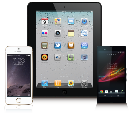

iPhone,iPad,Androidなどのアプリの企画・デザイン・開発までトータルにサポート。スマートフォンの特性を生かしたアプリやサイトを構築。
ウェブや、モバイルシステムの豊富な開発経験と実績をもとに、スマートフォンの特性を生かしたアプリケーションやサイト構築を行います。

既存のPC用サイトや携帯用サイトをスマートフォンに特化させて作りなおすだけではなく、既存のデータベースや様々な機能を追加することも可能です。
ビジネスユースとして、お客様にあったアプリの開発や企画をサポート致します。
アプリの企画・デザイン・開発までトータルにサポートします
iTunesStoreやGooglePlayに公開するアプリはもちろん、営業ツールとしてマーケット非公開アプリの制作なども承ります。
- 業務系アプリ
- キャンペーンアプリ
- ゲーム・エンターテイメント
- スマホ・タブレット
本当に作りたいアプリを制作致します
お客様の要件をヒアリングし、要件定義→公開まで、一貫してアプリを制作します。
お客様の既存のコンテンツや特性を生かしたアプリを制作いたします
- スマートフォンに最適化したページの制作
- スマートフォンはパソコンとは違う操作感覚の端末です。お客様からのご依頼、ご要望に応じてたデザインはもちろん、ハード的な違いや、情報設計の違い、デザインの違い、コーディングの違いなど、スマートフォン向けサイトを制作致します。マートフォンに最適化したページの制作
- パッケージソフトウェアのスマホ最適化を致します
- ECパッケージや、会員サイトなど様々な要素に応じてユーザビリティの高いスマートフォンサイトを構築致します。 ファーストビューの設計やリキッドデザインでの対応、iPhone/Andoroidに依存しない共通のデザイン配置やレイアウトなどを考慮した制作を致します。
- 既存システムのクライアントアプリ製作
- 既存業務システムと連携を取るスマートフォン向けのアプリや、クライアントアプリケーションの開発なども行います。